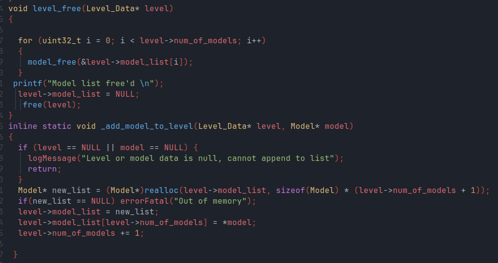

Ryen Johnston
Graphics Engineer.

About Me
I'm Ryen, a senior at the University of Colorado Boulder currently pursing my BS in Computer Science and a minor in math. I'll be graduating this May, with my most of my experience being graphics programming. I enjoy making games, game engines, and simulations in my free time, and want to apply my knowledge of computer graphics to the real world. I started off attending CU with no programming or graphics experience, and had no idea what I wanted to pursue. However, after taking my first CS course in freshman year, I want to pursue it as my degree. I spent a lot of time over winter and summer breaks learning how to become a graphics engineer, and I know it's the career I want to pursue. Outside of class, my main passions are astronomy and photography, which have taught me to be patient and curious. I continue to put in a lot of hard work to learn new graphics APIs (WebGPU, Vulkan, Metal) and programming languages (C++ 23, Rust).